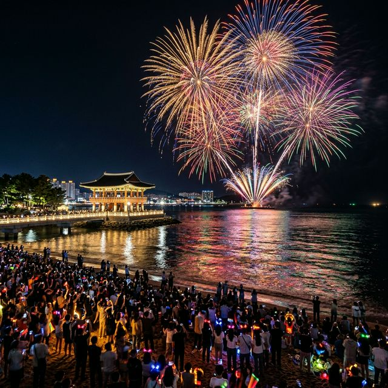
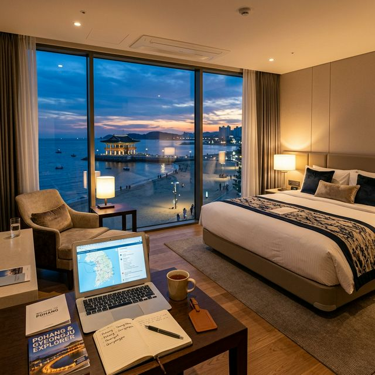

매년 수십만 명의 인파가 모이는 포항 국제불빛축제는 보통 날씨가 포근해지는 5월 하순에 개최됩니다. 2026년 예상 주간은 5월 22일(금)부터 5월
24일(일)까지로, 금요일 개막식과 토요일 메인 불꽃 쇼 순으로 진행될 가능성이 높습니다. 포항시는 영일대 해수욕장과 형산강 체육공원을 번갈아 가며 메인 무대로 활용해 왔으나,
최근에는 바다 위 전용 바지선을 활용한 연출이 가능한 영일대 해수욕장이 핵심 거점으로 확고히 자리 잡았습니다.
축전의 핵심인 '국제 불꽃 경연대회'는 세계 각국을 대표하는 화류 아티스트들이 자존심을 걸고 펼치는 조명과 음악의 하모니입니다. 단순히 불꽃을 쏘아 올리는 것을 넘어,
포항의 역사와 바다의 역동성을 스토리텔링으로 풀어내는 고난도 연출이 특징입니다. 2026년에는 최신 트렌드인 미디어 파사드 기법이 영일대 누각과 결합하여 한층 진화된 비주얼을 선보일 것으로
기대됩니다.
축제가 열리는 5월은 해가 늦게 지기 시작하므로 불꽃 쇼는 대략 저녁 8시 30분에서 9시 사이에 시작됩니다. 하지만 명당 자리를 확보하려면 오후 2~3시경에는 이미 해변에 도착해 자리를 잡아야
합니다. 특히 메인 무대 앞 돗자리 구역은 오전 중에 이미 만석이 되는 경우가 허다합니다. 따라서 여유로운 관람을 원하신다면 공식 홈페이지의 실시간 타임테이블을 사전에 숙지하고 동선을 짜는 것이
필수입니다.

영일대 해수욕장 하늘을 수놓은 화려한 국제불꽃쇼의 절정 — AI 제작 이미지
최고의 뷰를 자랑하는 1순위 명당은 단연 '영일대 누각' 인근의 백사장입니다. 바다 위 지어진 누각의 실루엣과 불꽃이 어우러진 사진을 담을 수 있는 스팟이기 때문입니다.
이곳은 공연 음향과 드론 쇼의 가독성이 가장 좋아 시각적, 청각적 만족도가 가장 높습니다. 다만, 가장 혼잡한 구역이므로 어린 자녀와 함께라면 군중 밀도가 다소 낮은 외곽 구역을 공략하는 것도 현명한
방법입니다.
조금 더 여유로운 관람을 원하신다면 '환호공원 스페이스 워크' 쪽 언덕이나 '송도 해수욕장' 건너편을 추천합니다. 송도 해수욕장에서는
영일대에서 터지는 불꽃을 조금 멀리서 보게 되지만, 바다 건너 펼쳐지는 불꽃의 전체적인 파노라마를 감상하기에 최적입니다. 인파 스트레스에서 벗어나 조용하게 연인과 대화하며 불꽃을 즐기기에 이보다 좋은
곳은 없습니다.
특히 2026년 새롭게 부상하는 명당은 영일대 해변의 '오션뷰 카페/루프탑'입니다. 일부 대형 카페들은 축제 당일에 한해 유료 예약제로 루프탑을 운영하기도 합니다.
돗자리를 펴고 바닥에 앉는 것이 불편하신 어르신들을 모시고 간다면, 다소 비용을 지불하더라도 카페 예약을 선점하는 것이 효도 여행의 정석이 될 것입니다. 이 예약 또한 축제 한 달 전에는 마감되므로
빠른 결단이 필요합니다.
포항 국제불빛축제 기간의 숙소 예약은 '전쟁' 그 자체입니다. 특히 5월 초 황금연휴에 이미 포항을 방문하려는 여행자가 증가하는 시점이라, 5월 말 축제 일정까지 더해지면
영일대 인근 호텔과 펜션의 가격은 평소의 2~3배 이상으로 치솟습니다. 숙소 예약 성공을 위한 첫 번째 법칙은 '축제 일정 확정 즉시 예약'입니다. 에어비앤비나 야놀자 등
주요 플랫폼을 통해 오픈되는 즉시 취소 가능 옵션으로 선점해 두는 것이 안전합니다.
두 번째 전략은 '동선 다각화'입니다. 영일대 해수욕장 바로 앞 숙소를 잡는 것이 베스트지만, 이미 만차이거나 가격이 터무니없다면 포항 시청
인근(대잠동)이나 포항역 주변 호텔을 고려해보세요. 축제장까지 택시나 셔틀버스를 타고 이동하는 것이 해변가에서 인파에 시달리는 것보다 비용과 위생
면에서 더 나은 선택이 될 수 있습니다. 특히 시청 주변 비즈니스 호텔들은 축제 프리미엄이 덜해 합리적인 가격대에 예약이 가능합니다.
마지막으로 '펜션 및 글램핑'을 원하신다면 포항 남구의 구룡포나 호미곶 쪽을 알아보시는 것도 대안입니다. 축제장과는 차로 30~40분
거리지만, 다음 날 여행 코스로 호미곶 상생의 손을 들르기에 좋고 한적한 어촌 마을의 정취를 느낄 수 있어 가족 단위 여행객들에게 추천합니다. 숙소 예약 시에는 반드시 주차 가능 여부와 축제장행
셔틀버스 정류장과의 거리를 확인하는 꼼꼼함을 발휘하시기 바랍니다.

영일대 해변이 내려다보이는 프리미엄 호텔 객실에서의 릴랙스 타임 — AI 제작 이미지
2026년 포항 국제불빛축제의 기술적 정점은 '1,000대 이상의 드론 라이트쇼'입니다. 기존의 불꽃이 소리와 타격감을 강조했다면, 드론 쇼는 밤하늘을 스케치북 삼아
포항의 상징물인 연오랑 세오녀 이야기나 포항 제철소의 웅장함을 형상화하는 정교한 연출을 보여줍니다. 불꽃 쇼 시작 전후로 펼쳐지는 드론들의 군무는 아이들이 가장 환호하는 순서로, 스마트폰 동영상 촬영
준비를 마쳐야 할 타이밍입니다.
영일대 누각 벽면을 활용한 미디어 파사드 전시는 기하학적인 문양과 한국 전통 문양을 결합하여 고궁과 미래 기술의 만남을 상징합니다. 2026년에는 관람객이 스마트폰 앱을
통해 특정 메시지를 입력하면, 실시간으로 누각 벽면에 해당 메시지가 빛으로 투사되는 인터랙티브 이벤트도 예정되어 있어 연인들의 프로포즈 장소로도 각광받을 예정입니다.
또한, 해변을 따라 설치된 '불빛 테마로드'는 형형색색의 조명 조형물들이 가득해 밤 산책의 즐거움을 더해줍니다. 불꽃 쇼가 끝난 뒤에도 인파 분산을 유도하기 위해 자정까지
운영되므로, 메인 쇼가 끝나고 서둘러 주차장으로 향하기보다 테마로드를 천천히 걸으며 여운을 즐기는 것이 교통 정체를 피하는 지혜이기도 합니다.
축제 기간 포항 시내는 극심한 정체에 시달립니다. 영일대 해수욕장 주변 도로는 전면 통제되거나 일방통행으로 운영되는 구역이 많습니다. 자차 이용 시 '포항종합운동장' 또는
'포항시청'에 마련된 거점 주차장에 차를 세우고 축제장에서 운영하는 무료 순환 셔틀버스를 타시는 것이 정신 건강에 가장 이롭습니다.
2026년에는 셔틀버스의 대수를 증차하여 대기 시간을 15분 이내로 줄일 계획이라고 합니다.
수도권에서 오시는 분들이라면 KTX 포항역 이용을 강력히 추천합니다. 서울역에서 2시간 반이면 도착하며, 축제 기간에는 야간 불꽃 쇼 관람객을 위해 심야 KTX가 임시
편성되는 경우도 많습니다. 포항역에서 축약 행사장까지 택시를 타면 약 15~20분 정도 소요되는데, 요금이 다소 나오더라도 주차난과 운전의 피로를 생각하면 가장 효율적인 이동 수단입니다.
포항역이나 터미널에서 카셰어링 서비스를 이용하시는 것도 좋지만, 불꽃 쇼 종료 직후에는 모든 유출 도로가 거대한 주차장으로 변하므로 반납 시간에 쫓기지 않도록 여유 있게
시간을 설정해야 합니다. 가능하다면 자차보다는 대중교통을, 시내 이동 시에는 공공자전거나 전동 킥보드(지정 구역)를 활용하는 것이 기동성 면에서 유리합니다.
5월 말이라 해도 밤바다의 위력은 무시할 수 없습니다. 불꽃 쇼를 기다리는 몇 시간 동안 해풍을 직접 맞다 보면 평소보다 체감 온도가 급격히 떨어집니다. 따라서 가벼운 패딩이나 두툼한
바람막이는 필수입니다. "낮에는 더운데 설마 추울까?" 하는 생각으로 반팔만 입고 갔다가는 덜덜 떨며 불꽃을 제대로 즐기지 못하는 불상사가 발생할 수 있습니다.
바닥의 습기를 차단할 수 있는 도톰한 돗자리와 엉덩이 통증을 줄여줄 휴대용 방석도 챙기세요. 해변 모래사장에 장시간 앉아 있는 것은 생각보다
허리와 골반에 무리를 줍니다. 또한 야외 활동이 길어지므로 보조 배터리는 평소보다 넉넉한 용량으로 준비하시고, 불꽃 촬영 시 흔들림을 방지할 삼각대 혹은 고정 거치대도
잊지 마세요. 단, 인파 밀집 지역에서의 과도한 삼각대 사용은 지양하는 매너가 필요합니다.
간단한 생수와 간식거리는 축제장 근처 편의점을 이용해도 되지만, 축제 당일 편의점은 계산 줄이 건물 밖까지 이어지는 장관을 연출합니다. 가급적 숙소 근처나 미리 준비해온 간단한 핑거푸드를 챙기는 것이
시간 낭비를 줄이는 방법입니다. 마지막으로 쓰레기를 담아갈 개인용 쓰레기 봉투를 지참하여 성숙한 시민 의식을 보여줍시다.
축제가 밤에 열린다면, 낮에는 포항의 랜드마크들을 섭렵할 시간입니다. 영일대 해수욕장 끝자락에 위치한 '환호공원 스페이스 워크'는 독일 작가 부부가 설계한 예술 작품이자
거대한 산책로입니다. 마치 구름 위를 걷는 듯한 구불구불한 철제 트랙 위에서 바라보는 포항 앞바다와 제철소 전경은 짜릿한 전율을 선사합니다. 입장료는 무료이지만 대기 줄이 길 수 있으니 오전 일찍
방문하는 것이 상책입니다.
금강산도 식후경, 포항의 활기를 느끼고 싶다면 '죽도 시장'으로 향하세요. 동해안 최대 규모의 전통 시장인 이곳은 싱싱한 횟감과 대게, 그리고 포항의 대표 간식인 문어 빵
등이 가득합니다. 불꽃 쇼를 보며 먹을 주전부리들을 이곳에서 구매하는 것도 좋습니다. 2026년에는 축전 기간에 맞춰 죽도 시장 내에 '불빛 야시장' 전용 구역이 확대 운영되어 미식의 즐거움을 더해줄
예정입니다.
드라마 촬영지 투어를 좋아하신다면 '구룡포 일본인 가옥거리'(동백꽃 필 무렵 배경지)를 추천합니다. 아기자기한 골목과 예쁜 카페들이 많아 감성 사진을 남기기에 최적입니다.
여기서 계단 끝까지 올라가 뒤를 돌아보면 구룡포항의 한적한 정취를 한눈에 담을 수 있습니다. 포항은 이처럼 항구의 서정성과 첨단 도시의 화려함이 공존하는 매력적인 도시입니다.
포항에 오면 자다가도 생각나는 맛, 바로 '포항 물회'입니다. 고추장 베이스의 양념에 비벼 먹다가 살얼음 육수를 부어 국수 소면과 밥을 말아 먹는 포항식 물회는 입안 가득
시원함과 감칠맛을 선사합니다. 특히 제철 참가자미나 도다리를 듬뿍 얹은 물회 한 그릇이면 여행의 피로가 싹 가십니다. 영일대 해변을 따라 유명한 물회 노포들이 즐비하니 취향에 맞는 곳을
골라보세요.
빵 애호가라면 '포항 빵지순례'도 빼놓을 수 없습니다. 영일대 인근의 유명 베이커리 카페들은 포항 시그니처 메뉴인 **'부추 빵'**이나 **'오징어 먹물 빵'**으로
여행객들의 발길을 잡습니다. 불꽃 쇼 관람 전 카페에서 시원한 커피와 함께 빵을 사서 해변가로 나들이 가는 것은 포항 여행객들의 소박한 공식과도 같습니다.
든든한 한 끼를 원하신다면 '소머리 국밥'도 훌륭한 선택입니다. 죽도 시장 안의 국밥 골목은 오랜 세월 포항 사람들의 아침과 숙취를 책임져온 깊은 맛을 자랑합니다. 뽀얀
국물에 수육이 듬뿍 들어간 국밥 한 그릇은 특히 축제 관람 후 쌀쌀해진 몸을 녹여주기에 최상의 메뉴입니다. 포항의 인심을 고스란히 느낄 수 있는 미식 투어를 만끽하시길 바랍니다.
화려한 불꽃 뒤에는 수많은 관계자의 노고와 시민들의 배려가 숨어 있습니다. 2026년 축제는 **'자원 순환과 환경 보호'**를 테마로 진행되는 만큼, 축제장 전역에서 일회용품 줄이기 캠페인이
벌어집니다. 개인 컵 지참 시 음료 할인 등 소소한 혜택을 챙기면서 깨끗한 포항 바다를 지키는 데 동참해 주세요. 여러분의 매너 있는 관람이 포항 불빛축제를 더 오랫동안 지속하게 하는 원동력이
됩니다.
축제가 끝난 직후 귀가 차량이 몰려 해변 근처 도로는 마비 상태가 됩니다. 급하게 차를 빼기보다 인근 카페에서 여유롭게 커피 한 잔을 더 하거나, 밤바다를 걷다 보면 어느새 정체가 풀리기 마련입니다.
서두름보다는 여유를 택할 때, 불꽃의 여운은 더 아름답게 남습니다. 안전 요원의 안내에 적극 협조하여 안전하고 행복한 축제 관람이 되시기를 기원합니다.
2026년 5월, 포항의 밤하늘은 그 어느 해보다 뜨겁고 찬란할 것입니다. 쏟아지는 불꽃 비를 맞으며 인생의 소중한 페이지를 선명하게 장식해 보세요. 빛나는 포항에서 여러분의 열정과 꿈도 함께 타오르길
응원합니다. 감사합니다!